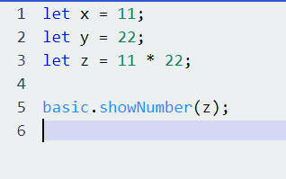

I JavaScript så er en variabel noe vi bruker for å holde på en verdi, mer presist en data verdi. Eksempler på variabler som vi bruker da er x, y og z. Dette ser slik ut:
Betegnelsen «let» er det vi bruker for å indikere at x, y og z er variabler og det som kommer etter likhetstegnet er verdien som vi vil at variabelen skal holde på. I eksempelet over så sier vi at variabel x skal holde på en verdi av tallet 5, variabel y skal holde på en verdi av tallet 6, mens z skal holde på summen av verdiene x og y.
Variabler kan, i tillegg til tall, holde på meldinger. Meldingene som vi vil at variablene skal bestå av kaller vi for «strings». Dette vil da se slik ut i JavaScript:
Her er det da viktig å huske på å bruke «» når man skal definere en variabel som string. Noe av det viktigste å huske på når man bruker variabler er at hver variabel som man lager må ha et unikt navn, dette kaller vi for identifikasjoner, slik at det ikke blir forvirring i koden hvis man skulle hatt to variabler med samme navn som inneholder to forskjellige verdier. Hvis man skulle kjørt koden da, så vil ikke JavaScript kunne vite hvilken variabel man ønsker spesifikt å bruke. Viktig regler å merke seg når det gjelder variabler:
Som sagt over så er variablenes hovedoppgave å holde på en verdi av data. Praktiske eksempler på hvor vi har behov for variabler for å holde på verdier er da: en nettbutikk som da kan være solgte produkter og en handlekurv. Variabler vil her da holde på den informasjonen.
Grunnen til at vi bruker variabler er for å gjøre kodejobben mye enklere for oss selv. Siden variabler gir oss muligheten til å lage fleksible programmer, så slipper vi derfor å sette inn data direkte i et program og derfor isteden bruke variabler for å representere dataen vi ønsker å bruke.
Vi skal nå lage noen variabler og vise hvordan de kan brukes. Vi skal løse et enkelt matematikk problem og vise resultatet på vår Micro:Bit. Vi skal løse 11 x 22. Vi starter da først med å definere variablene:
Deretter lager vi en variabel som skal regne ut 11 x 22, og det gjør vi på denne måten:
Her er det da viktig å merke seg at * brukes som gangetegn i JavaScript og i mange andre ulike kodespråk som Python og vanlig Java. Ellers så er / tegnet deling, mens + og - er det samme i kodespråk. Nå er det eneste som gjenstår å skrive en enkel kodelinje som skal vise resultatet, som da her er verdien til variabel z. Dette i gjør vi i Micro:Bit sin editor slik:
Grunnen til at vi skriver basic før showNumber er fordi showNumber er en funksjon som ligger under Basic delen i Micro:Bit sin MakeCode-editor. Koden i sin helhet vil se slik ut:
Micro:Bit brikken vil nå vise resultatet av regnestykket i sine LED-lys, men den vil gå løpende fra høyre til venstre slik siden tallet er høyt, det vil da se slik ut:
Da er du klar for å løse oppgavene under, om du sitter helt fast så har du løsningsforslag nederst i siden. Lykke til!